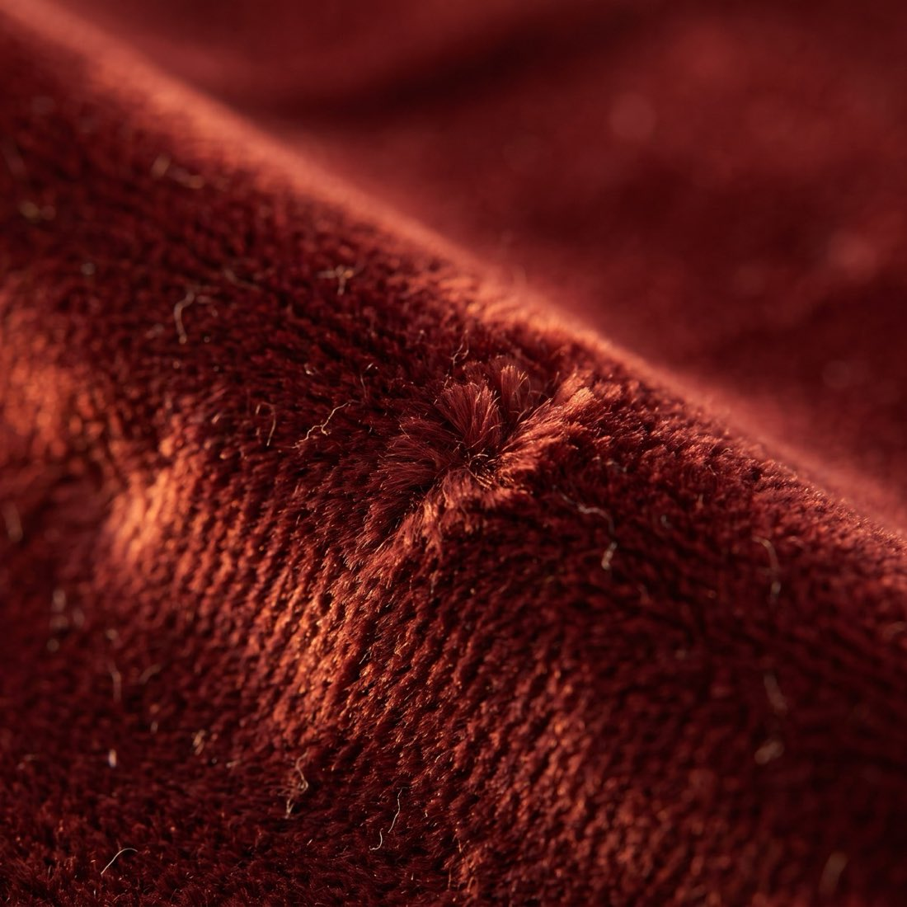
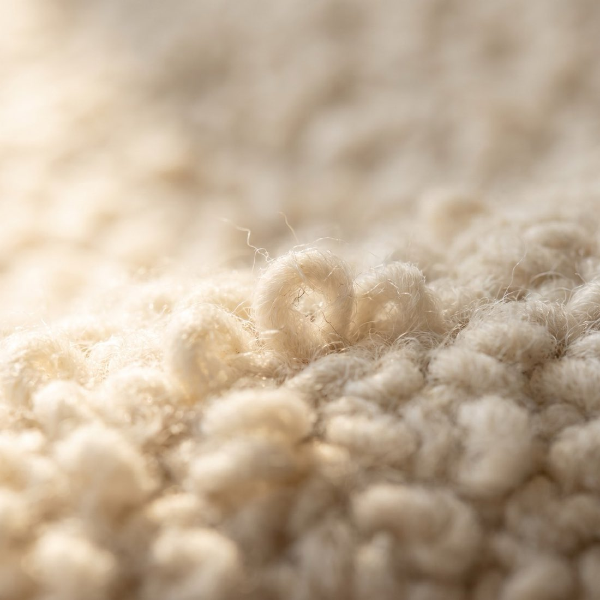
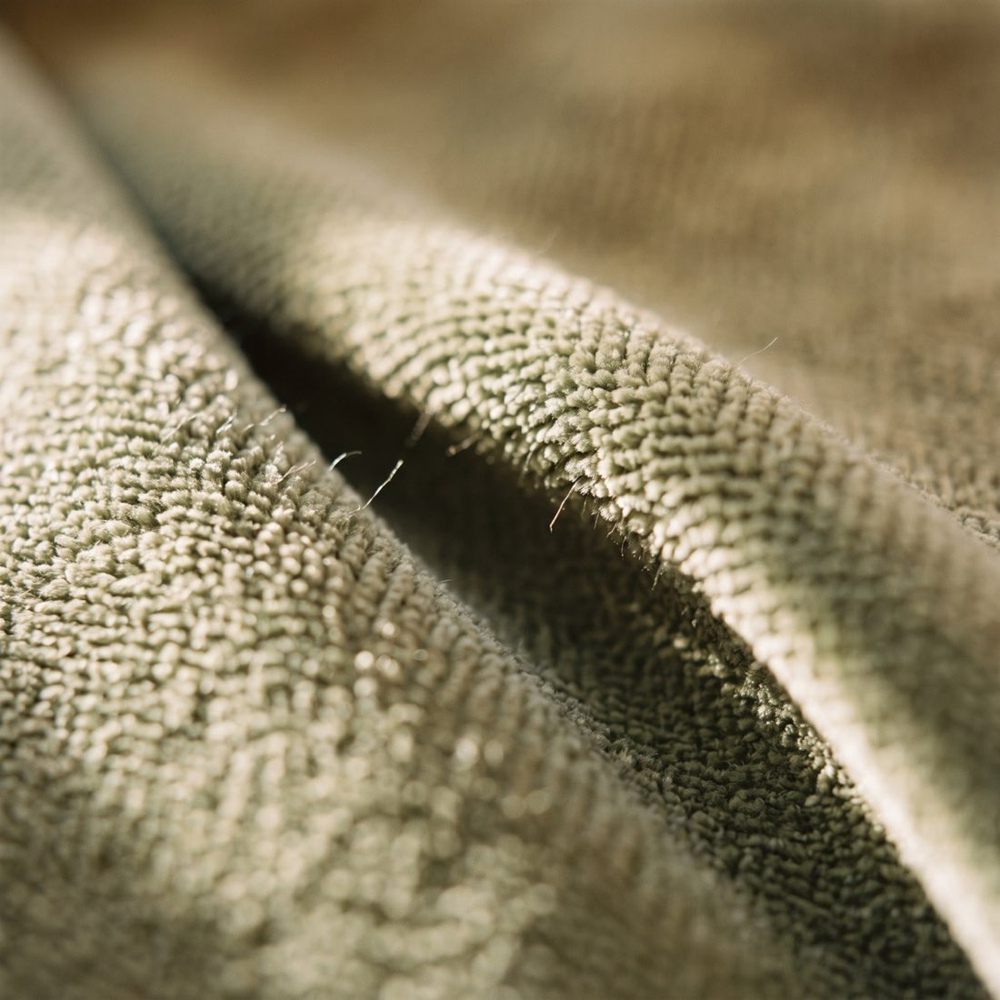
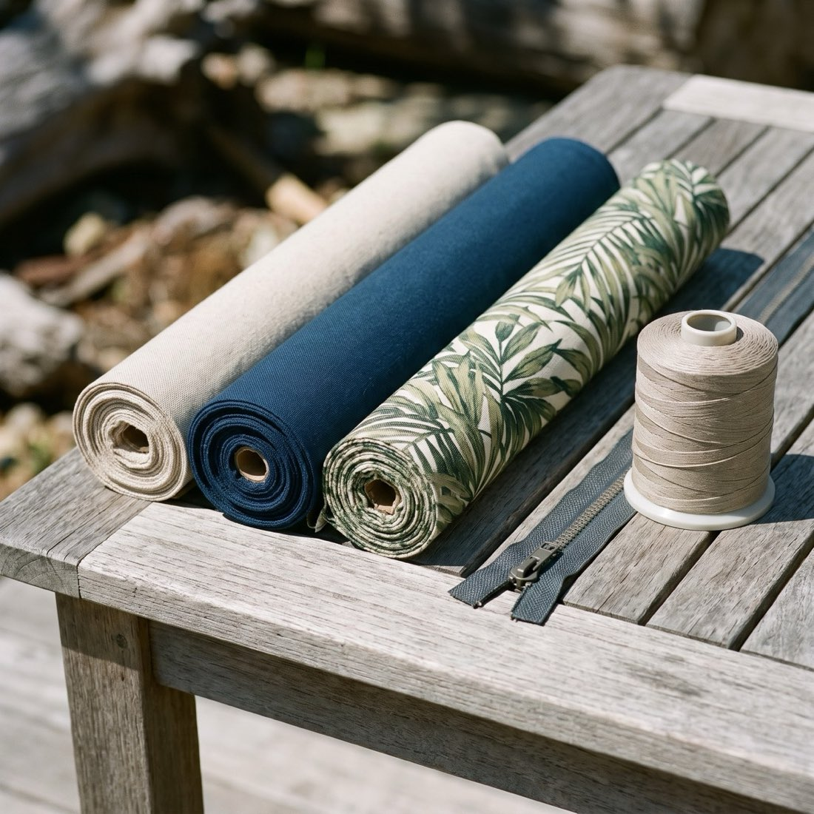

La bibliothèque
Cinquante-huit collections de neuf maisons, filtrables par maison, texture, tenue et couleur. Un écran rend mal la couleur et la main : trois échantillons, quels qu’ils soient, peuvent être mis de côté au comptoir et vus dans la lumière de la pièce à laquelle ils sont destinés.
Les maisons
Parcourir les échantillons
Les couleurs présentées illustrent la gamme de chaque collection; ce ne sont pas des photographies d’échantillons individuels. Les coloris exacts se confirment au comptoir.




Quel tissu survit à votre maison
Les doubles frottements mesurent la résistance à l’abrasion : une machine Wyzenbeek travaille le tissu jusqu’à la rupture. Sous 15 000, un tissu convient à une pièce décorative; au-delà de 100 000, il tient en salle à manger commerciale.
| Famille | Résiste à | Doubles frottements | Idéal pour | Attention |
|---|---|---|---|---|
| Crypton | Liquides, taches, odeurs, bactéries — la barrière est intégrée à la fibre | 50 000–100 000+ | Chiens, chats, tout-petits, chaises de salle à manger | Main plus ferme qu’un tissé non traité |
| Sunbrella | UV, moisissure, chlore, pluie; nettoyable à l’eau de Javel diluée | 30 000–50 000 | Balcons, bateaux, solariums, fenêtres plein ouest | Gamme de couleurs volontairement plus restreinte |
| Endurepel · DuraGarde | Les dégâts à base d’eau et d’huile perlent en surface | 30 000–50 000 | Sofas familiaux qui doivent rester doux | Traitement de surface — il s’use avec les années |
| Microsuède | Griffes, boulochage, abus général; se brosse | 40 000–100 000 | Maisons à chats — les griffes ne trouvent aucune boucle | Marque à l’eau si on ne tamponne pas uniformément |
| Velours performance | L’écrasement et le passage bien mieux que le velours de coton | 30 000–60 000 | Fauteuils signature, têtes de lit, banquettes | Le sens du poil change la couleur — demandez à voir les deux |
| Bouclé & tissés bouclés | Semble indulgent; la boucle est le point faible | 15 000–30 000 | Salons d’adultes, fauteuils d’appoint, têtes de lit | Une seule griffe tire toute une rangée de boucles; à éviter là où il y a un chat. |
| Vinyle & enduits contrat | Graisse, désinfectant, essuyage constant | 100 000+ | Banquettes de restaurant, cliniques, salles d’attente | La cote d’ignifugation doit correspondre à l’usage du local |
Ces plages sont les chiffres publiés par les filatures; la cote exacte est imprimée sur chaque échantillon en magasin. L’ensoleillement, les animaux, les enfants et la fréquence d’usage réelle sont ce qui restreint le choix.